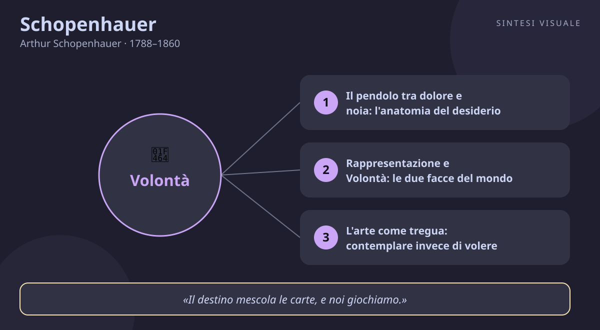

Home / Filosofi / Schopenhauer

Schopenhauer
Arthur Schopenhauer · 1788–1860
«La vita oscilla tra dolore e noia»
- Desiderio
- Noia
- Compassione
- Arte
💬La massima
«La vita oscilla dunque, come un pendolo, avanti e indietro, tra il dolore e la noia.»
— Arthur Schopenhauer, Il mondo come volontà e rappresentazione, vol. I, libro IV, § 57. L'opera uscì nel dicembre 1818 (con data di copertina 1819) e contiene l'intero sistema del filosofo. In originale tedesco: «Sein Leben schwingt also, gleich einem Pendel, hin und her, zwischen dem Schmerz und der Langenweile.»
Spiegazione. Prendi un pendolo e guardalo: non sta mai fermo al centro, corre sempre da un estremo all'altro. Così, dice Schopenhauer, è la vita di ognuno. Finché desideriamo qualcosa che non abbiamo — il lavoro, la casa, l'amore, il riconoscimento — soffriamo la mancanza: questo è il dolore. Poi, se e quando otteniamo ciò che volevamo, la gioia dura un attimo e subito subentra il vuoto: non sappiamo più cosa volere, tutto ci annoia, e questo è il secondo estremo, la noia. Allora inventiamo un nuovo desiderio e il pendolo riparte. Non è sfortuna né colpa nostra: è la struttura stessa del volere. Dietro ogni nostro «voglio» c'è una forza cieca e insaziabile — la Volontà — che non si acquieta mai, perché volere significa per definizione mancare di qualcosa. Chi capisce il meccanismo smette di incolpare il destino o sé stesso: non è che «a me va tutto storto», è che il gioco è fatto così per tutti. E da questa diagnosi spietata nasce, paradossalmente, una strada di liberazione: se il dolore viene dal volere, la pace verrà dal volere di meno, dal contemplare invece di bramare.
Il punto sottile. Attenzione: Schopenhauer non dice «non goderti niente» né predica la depressione. Dice una cosa più precisa: il piacere non è uno stato positivo e stabile, è solo la breve pausa tra un dolore e l'altro — come bere quando si ha sete: il sollievo è intenso ma finisce col bicchiere. La noia, poi, non è un lusso da sfaccendati: è la prova che il desiderio ci abita dentro. L'uomo sazio che sbadiglia davanti a tutto dimostra che non era l'oggetto a mancargli, ma il volere stesso a tormentarlo. Per questo il filosofo ammirava chi riesce a sospendere il volere: l'artista perso nella contemplazione di un quadro, l'ascoltatore rapito dalla musica, il saggio che guarda il mondo senza più pretendere nulla da esso. Non felicità conquistata, ma tregua guadagnata.
Perché conta oggi. Viviamo nell'epoca del pendolo accelerato: le vetrine e i feed ci tengono inchiodati all'estremo del dolore — «mi manca questo, devo avere quello» — e non appena compriamo, l'algoritmo ci mostra già l'oggetto successivo, mentre il nuovo acquisto giace dimenticato in un angolo. Passiamo dal desiderio alla noia nel tempo di una consegna a domicilio. Schopenhauer ci mette uno specchio davanti: se corriamo senza posa, il problema non è che desideriamo le cose sbagliate, è che crediamo che il prossimo desiderio sarà quello definitivo. Non lo sarà mai. L'unica mossa vincente è cambiare gioco: coltivare momenti in cui non si vuole nulla — un libro, una passeggiata, la musica — e scoprire che in quegli istanti il pendolo, miracolosamente, si ferma.
👤Biografia
Arthur Schopenhauer nacque il 22 febbraio 1788 a Danzica, allora orgogliosa repubblica mercantile affacciata sul Baltico, dal ricco commerciante Heinrich Floris e da Johanna, donna colta e brillante che diventerà una scrittrice celebre. Il padre aveva un progetto per lui: farne un mercante cosmopolita. Il ragazzo viaggiò per l'Europa, imparò le lingue, vide il mondo — ma dentro di sé covava tutt'altro. Quando il padre morì nel 1805, in circostanze mai chiarite (probabile suicidio gettandosi in un canale), Arthur, diciassettenne, si sentì libero e insieme marchiato per sempre: il sospetto che la vita fosse dolore divenne esperienza personale prima che filosofia.
La rottura con la madre e gli studi. La madre aveva aperto a Weimar uno dei salotti letterari più famosi di Germania, frequentato da Goethe e dai grandi del tempo. Ma madre e figlio erano due fuochi incompatibili: lei lo trovava tetro e insopportabile, lui la giudicava frivola. Dopo l'ennesimo litigio, nel 1814, si separarono per sempre — non si rividero mai più. Intanto Arthur studiava sul serio: a Gottinga il maestro Schulze gli consigliò di dedicarsi solo a due autori prima di tutto, Platone e Kant; a Berlino ascoltò Fichte e ne uscì disgustato, annotando sui quaderni insulti feroci contro quella che giudicava ciarlataneria. Nel 1813, a Jena, si laureò con una tesi folgorante, Sulla quadruplice radice del principio di ragion sufficiente, e a Dresda scrisse in pochi anni il capolavoro.
Il genio ignorato. Il mondo come volontà e rappresentazione uscì alla fine del 1818 e cadde nel vuoto: poche copie vendute, nessuna discussione, il resto della tiratura finito al macero. Schopenhauer, convinto di aver risolto l'enigma del mondo, si candidò all'insegnamento a Berlino e nel 1820 — per sfida aperta — fissò le sue lezioni nelle stesse ore di Hegel, allora idolo dell'università. Il risultato fu umiliante: l'aula di Hegel gremita, la sua deserta. Abbandonò l'università per sempre. Nel 1831, allo scoppio del colera a Berlino (quello che ucciderà Hegel), fuggì a Francoforte sul Meno, dove visse per quasi trent'anni da scapolo solitario, con orari da orologio svizzero: studio al mattino, pranzo sempre allo stesso tavolo della locanda Englischer Hof, passeggiata pomeridiana col barboncino Atma (nome sanscrito che significa «sé, anima»), flauto la sera e letture fino a notte.
Il riscatto tardivo. Per decenni nessuno lo lesse, ma lui continuò a scrivere e ad aggiornare l'opera: seconda edizione ampliata nel 1844, saggi di etica, scritti scientifici. La svolta arrivò nel 1851 con i Parerga e Paralipomena, una raccolta di saggi più leggibili — tra cui gli Aforismi sulla saggezza della vita — che finalmente conquistò lettori e ammiratori. Da vecchio burbero divenne una celebrità: giovani filosofi pellegrinavano a Francoforte per conoscerlo, Wagner gli mandò con dedica L'anello del Nibelungo, le università cominciarono a parlarne. Morì il 21 settembre 1860, seduto sul divano di casa, colto da una crisi respiratoria: se ne andò da solo come aveva vissuto, lasciando un sistema che avrebbe scosso il secolo successivo.
Il carattere. Intrattabile e lucidissimo: sarcastico con i rivali (Hegel era per lui un «ciarlatano», i professori di filosofia «mercanti» di idee), tenerissimo con gli animali — il barboncino sedeva con lui a tavola e Schopenhauer si indignava per ogni maltrattamento delle bestie, cosa rarissima all'epoca. Pessimista sul mondo, disciplinato nella vita: trent'anni di stessa routine senza mai annoiarsi, perché aveva imparato a volere poco. Diffidente verso gli uomini, generoso coi pochi amici: pagò di tasca propria la pubblicazione delle opere che nessuno voleva stampare.
📌Sintesi del pensiero
Il mondo ha due facce inseparabili. Come rappresentazione, è ciò che appare a ciascuno di noi attraverso spazio, tempo e causalità — un velo (il «velo di Maya» degli indiani) che ordina le cose ma nasconde la loro essenza. Come Volontà, è una forza unica, cieca e insaziabile che spinge ogni essere a vivere, volere, bramare: la cosa in sé di Kant, che Schopenhauer dice di aver finalmente svelato guardando dentro di sé, nel proprio corpo che vuole prima ancora di pensare. Da questa Volontà nasce ogni sofferenza — desiderare è mancare — e solo tre vie offrono tregua: l'arte, la compassione e la rinuncia del saggio.
- Conoscenza: spazio, tempo e causalità sono occhiali della mente, non proprietà delle cose; soggetto e oggetto nascono insieme, e la scienza descrive solo relazioni tra fenomeni, mai l'essenza.
- Metafisica: l'essenza è la Volontà di vivere, una e identica in tutti gli esseri, al di là del principio di individuazione; il corpo è la Volontà resa visibile.
- Etica: la morale nasce dalla compassione — riconoscere negli altri la stessa Volontà che soffre in noi — e culmina nella negazione del volere, sull'esempio di santi e asceti d'Oriente e d'Occidente.
🏛️I temi fondamentali
- Il pendolo tra dolore e noia: l'anatomia del desiderio. È il cuore del libro IV del Mondo, il passo della nostra massima (§ 57). Schopenhauer descrive il meccanismo con precisione clinica: il desiderio è dolore perché è mancanza; il possesso è delusione perché l'oggetto, una volta ottenuto, perde il fascino; la sazietà è noia — che nasce proprio quando al desiderio manca un oggetto — che ci spinge a desiderare di nuovo. Esempio concreto: aspetti per mesi il nuovo telefono, lo sogni, lo confronti; il giorno che arriva sei euforico per un'ora, dopo una settimana è «solo un telefono» e già guardi il modello successivo o un altro oggetto. Il filosofo nota anche la variante dei ricchi e dei potenti: chi può avere tutto subito non prova nemmeno l'eccitazione dell'attesa, e precipita direttamente nella noia — da cui feste sempre più sfrenate, distrazioni sempre più rumorose. Non c'è via d'uscita dentro il gioco del volere: c'è solo la comprensione del gioco.
- Rappresentazione e Volontà: le due facce del mondo. Prendi un sasso, un albero, il tuo stesso corpo: la scienza li descrive come oggetti nello spazio e nel tempo, legati da cause — questo è il mondo come rappresentazione, ordinato dal «principio di ragion sufficiente» (niente accade senza un perché). Ma c'è un oggetto che conosciamo anche da dentro: il nostro corpo. Quando alzi un braccio, non vedi solo un movimento, senti lo sforzo, la spinta, il volere — e lì, dice Schopenhauer, tocchiamo la cosa in sé: la Volontà. La stessa forza cieca che fa crescere la pianta verso la luce, spinge l'animale alla preda e l'uomo all'ambizione. Esempio concreto: nessuno ti ha «spiegato» la fame o l'innamoramento — li hai conosciuti sentendoli, come una pressione interna che la ragione subisce invece di comandare. Per questo, dice il filosofo, l'uomo è un essere che vuole prima di pensare: l'intelletto è il servitore, la Volontà la padrona.
- L'arte come tregua: contemplare invece di volere. Se il dolore nasce dal volere, la liberazione momentanea nasce dal sospendere il volere — ed è ciò che accade nella contemplazione estetica. Davanti a un grande quadro o a un tramonto, per un istante smettiamo di chiederci «a cosa mi serve?» e ci perdiamo nella pura visione: diventiamo, dice Schopenhauer, «puro occhio del mondo», soggetto senza volontà. In questo stato contempliamo le Idee eterne (prese da Platone) invece degli oggetti utili. E la musica è l'arte suprema: mentre le altre arti copiano le Idee, la musica è copia diretta della Volontà stessa — per questo ci commuove senza rappresentare nulla. Esempio concreto: metti le cuffie dopo una giornata pesante e una sinfonia ti fa dimenticare bollette, scadenze e litigi per venti minuti — non hai risolto nulla, ma hai respirato. Quella è la tregua schopenhaueriana: breve, gratuita, vera.
- La compassione: «questo sei tu». Come si fonda la morale, se l'uomo è egoista per natura? Schopenhauer risponde: con la compassione (Mitleid), l'esperienza in cui il confine tra me e l'altro crolla. Davanti a chi soffre — un amico malato, un animale bastonato, uno sconosciuto in lacrime — posso sentire il suo dolore come mio, perché in fondo la Volontà che soffre in lui è la stessa che soffre in me: «tat tvam asi», «questo sei tu», dicevano le Upanishad. Chi agisce per compassione non calcola vantaggi: aiuta perché non distingue più il proprio bene dall'altrui. Esempio concreto: ti tuffi per salvare un bambino che annega senza pensare al tuo vestito, al pericolo, al tornaconto — in quell'istante l'egoismo è semplicemente sparito. Per Schopenhauer quello è l'unico atto davvero morale: tutto il resto — dovere, onore, convenienza — è egoismo travestito.
- La negazione del volere: il saggio che dice no. La vetta del sistema è radicale: se volere è soffrire, la pace definitiva è smettere di volere — non col suicidio (che, dice Schopenhauer, è al contrario un atto di volontà fortissima: il suicida vuole la vita, solo senza quel dolore), ma con l'ascesi: digiuno, castità, povertà volontaria, distacco, sull'esempio dei mistici cristiani, dei santi e dei monaci buddhisti che tanto ammirava. Il saggio non fugge il mondo: lo guarda, lo capisce e non pretende più nulla da esso. È il rovesciamento del pendolo: non più oscillare, ma fermarsi. Schopenhauer ammetteva di non essere lui stesso un santo — amava la buona tavola e le comodità — ma indicava la meta con onestà: la redenzione è possibile, ma costa tutto ciò a cui siamo attaccati.
📚Le opere principali
- Il mondo come volontà e rappresentazione (1818, data di copertina 1819; 2ª ed. ampliata 1844; 3ª ed. 1859). L'opera-sistema in quattro libri: il mondo come rappresentazione (libri I e III) e come Volontà (libri II e IV), più i Supplementi del 1844. Tesi centrale: dietro il velo dei fenomeni c'è un'unica Volontà cieca, e la vita è sofferenza interrotta da tregue — arte, compassione, ascesi. Conta perché è la più grande metafisica del pessimismo moderno e il seme da cui germoglieranno Nietzsche, Freud e Wagner: ignorata alla nascita, divenne il libro più influente della seconda metà dell'Ottocento tedesco.
- Parerga e Paralipomena (1851, 2 voll.). «Scritti secondari e tralasciati»: saggi brevi, aforismi, riflessioni su tutto — dal rumore ai libri, dalle donne alla religione. Include gli Aforismi sulla saggezza della vita, il suo testo più letto. Tesi centrale: anche dentro un mondo infelice, si può vivere con saggezza — salute, carattere e indipendenza valgono più di ricchezze e fama. Conta perché fu il libro della fama tardiva: leggibile e pungente, portò Schopenhauer dai salotti al grande pubblico e ancora oggi è la porta d'ingresso ideale al suo pensiero.
- I due problemi fondamentali dell'etica (1841). Raccoglie i due saggi da concorso: Sulla libertà del volere umano (premiato dall'Accademia di Norvegia, 1839) e Sulla base della morale (rifiutato dall'Accademia di Danimarca, 1840). Tesi centrale: l'uomo non è libero nel suo essere — agisce necessariamente secondo il proprio carattere — ma la morale si fonda su un fatto reale, la compassione. Conta perché demolisce il libero arbitrio con argomenti ancora citati nei dibattiti odierni e fonda un'etica senza Dio né dovere kantiano.
- Sulla quadruplice radice del principio di ragion sufficiente (1813). La tesi di dottorato, poi rivista fino al 1847. Tesi centrale: il «perché» ha quattro forme diverse (divenire, conoscere, essere, agire) che i filosofi confondono continuamente — e da questa confusione nascono molti errori metafisici. Conta perché è il fondamento logico di tutto il sistema: senza questa mappa delle quattro radici, la distinzione tra rappresentazione e Volontà non starebbe in piedi.
💬Massime celebri
«Il destino mescola le carte, e noi giochiamo.» — Aforismi sulla saggezza della vita, cap. 5 (in Parerga e Paralipomena, vol. I, 1851). In tedesco: «Das Schicksal mischt die Karten, und wir spielen.» Conta perché riassume l'intera saggezza pratica di Schopenhauer: non scegli le carte (nascita, epoca, carattere, salute), ma come le giochi dipende da te — carattere e salute, dice, valgono più di ogni ricchezza ricevuta in sorte.
«Predicare la morale è facile, fondare la morale è difficile.» — Motto degli scritti etici, ripreso da La volontà nella natura ed epigrafe dei Due problemi fondamentali dell'etica (1841). In tedesco: «Moral predigen ist leicht, Moral begründen schwer.» Conta perché è la sua dichiarazione di guerra ai moralisti: chiunque sa dire «sii buono», quasi nessuno sa spiegare perché l'uomo dovrebbe esserlo — e lui la risposta la dà: la compassione.
«Ogni uomo prende i limiti del proprio campo visivo per i confini del mondo.» — Spesso citata dai Parerga e Paralipomena (il pensiero compare negli scritti tardi e nei manoscritti). Conta perché è il ritratto perfetto del dogmatismo quotidiano: dal vicino che giudica tutto dal balcone al politico che scambia il proprio elettorato per «la gente» — e l'antidoto è proprio la filosofia: allargare lo sguardo oltre il proprio orizzonte.
⌛Contesto storico
- Schopenhauer nacque nel 1788 in un mondo sull'orlo dell'incendio: Danzica era ancora una libera repubblica di mercanti, ma nel 1793 la Prussia se l'annetterà con la seconda spartizione della Polonia — il bambino crebbe mentre la carta d'Europa veniva ridisegnata con la spada. Aveva un anno quando scoppiò la Rivoluzione francese (1789) e diciassette quando Napoleone travolse la Prussia a Jena (1806): da ragazzo vide passare eserciti, blocchi commerciali e fughe, e il crollo delle certezze dell'antico regime. Mentre studiava, l'Europa bruciava nelle guerre napoleoniche e rinasceva nelle guerre di liberazione del 1813 — l'anno della sua laurea.
- La Germania in cui si formò era un mosaico di staterelli sotto l'egemonia culturale di Weimar — Goethe e Schiller, il classicismo, i salotti come quello di sua madre — e sotto il dominio filosofico dell'idealismo: Fichte, Schelling e poi Hegel a Berlino insegnavano che la Ragione governa la storia. Schopenhauer li detestò tutti, vedendovi conformismo accademico al servizio del potere prussiano. Dopo il Congresso di Vienna (1815) venne la Restaurazione di Metternich: censura, polizia, carriere universitarie sorvegliate. Il suo fallimento accademico fu anche politico: un anti-hegeliano scomodo non poteva far carriera nella Berlino della Restaurazione.
- La società in cui visse da adulto era la Germania Biedermeier e poi del Vormärz: borghesia mercantile e professionale che si arricchiva, si chiudeva nel privato e sognava la rivoluzione senza farla — fino all'esplosione del 1848, che Schopenhauer, conservatore dell'ordine, guardò con orrore dalle finestre di Francoforte (si racconta che prestò il suo cannocchiale alle truppe che sparavano sui rivoltosi). Intorno a lui l'industrializzazione cambiava tutto: ferrovie, fabbriche, giornali, grandi città. Francoforte, città libera fino al 1866, era un porto franco di banchieri e fiere: il luogo perfetto per un uomo che viveva di rendita e disprezzava sia gli operai sia i borghesi arricchiti.
- Da chi è stato influenzato Immanuel Kant, il maestro riconosciuto — da lui prese la distinzione tra fenomeno e cosa in sé, spazio e tempo come forme a priori; Platone, con la dottrina delle Idee eterne contemplate dall'arte; le Upanishad (nella traduzione latina Oupnek'hat, 1801) e il buddhismo nascente in Europa, da cui trasse il velo di Maya, il tat tvam asi e l'ascesi come redenzione; Johann Wolfgang von Goethe, di cui frequentò il salotto materno e con cui discusse di teoria dei colori; Baltasar Gracián, il gesuita spagnolo del Seicento di cui tradusse l'Oracolo manuale, modello del suo pessimismo pratico; e lo scetticismo di Schulze-Enesidemo, che lo vaccinò contro ogni sistema fumoso.
- A chi ha trasmesso a Richard Wagner, che dopo averlo letto compose il Tristano come dramma della redenzione dal desiderio; a Friedrich Nietzsche, che lo venerò come educatore prima di rovesciarlo; a Sigmund Freud, la cui teoria delle pulsioni inconsce è figlia diretta della Volontà cieca; a Lev Tolstoj e Thomas Mann, che ne fecero nutrimento dei romanzi; a Eduard von Hartmann e al pessimismo di fine secolo; a Ludwig Wittgenstein, nei cui quaderni riecheggia il solipsismo del soggetto schopenhaueriano; fino a Emil Cioran e alla cultura contemporanea, che cita il pendolo tra dolore e noia senza sapere di citarlo.
🌊L'eredità
- Schopenhauer morì credendo di aver vinto — e aveva ragione più di quanto immaginasse. Il primo a raccogliere il testimone fu Wagner: lesse il Mondo nel 1854 e ne restò folgorato, tanto da farne la filosofia del Tristano e Isotta e del Parsifal, dove desiderio, rinuncia e redenzione diventano musica. Poi venne Nietzsche, che a vent'anni lo adorò come un padre — Schopenhauer come educatore è il titolo di una sua Considerazione inattuale — prima di ribellarsi e trasformare la Volontà di vivere in volontà di potenza: senza il maestro da uccidere, non ci sarebbe stato l'allievo che conosciamo.
- Il Novecento lo bevve a sorsi: Freud riconobbe nel proprio inconscio — pulsioni cieche che guidano la ragione — l'erede della Volontà, e ammise il debito; Thomas Mann fece di Schopenhauer il filosofo segreto dei Buddenbrook e della Montagna incantata; Wittgenstein ne portò le tracce nel Tractatus; gli esistenzialisti ne ereditarono la nausea della noia borghese; Cioran ne fece il patrono del pessimismo lucido. Ancora oggi, ogni volta che la psicologia parla di «tapis roulant edonico» — corriamo verso il piacere e restiamo fermi — sta ridimostrando, con gli esperimenti, il pendolo del § 57.
🌍Esempi di oggi
- Il carrello che non si svuota mai. Desideri le cuffie nuove per settimane: confronti modelli, guardi recensioni, immagini quanto sarà bella la tua vita con quel suono. Arrivano, sei felice per tre sere — poi diventano «le cuffie che hai» e già adocchi lo smartwatch. Schopenhauer sorride amaro: non eri infelice per mancanza di cuffie, eri infelice perché il volere ti teneva in scacco; e la noia dopo l'acquisto lo dimostra. La tregua non è comprare meglio: è accorgersi del meccanismo, magari imponendosi una settimana senza acquisti per riscoprire che la musica si ascoltava benissimo anche prima.
- Lo scroll infinito delle sere stanche. Torni dal lavoro esausto e apri il telefono «per rilassarti»: un video tira l'altro, desideri la vita degli altri, ridi, sbadigli, continui a scorrere senza più voglia né piacere — dolore e noia fusi insieme in un'unica postura sul divano. È il pendolo in miniatura: ogni contenuto promette la scossa del desiderio e consegna la cenere della noia, e il dito ricomincia. L'esperimento schopenhaueriano è semplice: spegni tutto, metti un disco che ami e ascoltalo davvero dall'inizio alla fine, senza fare altro. Per venti minuti il pendolo si ferma — quella è arte come tregua, non come sottofondo.
- Il collega invidiato e poi compatito. Per mesi invidi il collega promosso: stipendio, auto, foto sorridenti — il tuo desiderio ti punge ogni giorno. Poi scopri che dorme quattro ore per notte, ha l'ansia perennemente alle calcagna e il matrimonio in crisi: l'invidia si scioglie e al suo posto nasce, se sei onesto, compassione. È il tat tvam asi in azione: dietro la maschera del successo, la stessa Volontà che soffre in te soffre in lui. Schopenhauer direbbe che in quell'istante hai visto il mondo senza velo — e che da lì nasce l'unica morale possibile: aiutarsi tra naufraghi invece di spingersi a vicenda sott'acqua.
📄Arthur Schopenhauer (1788–1860), il solitario di Francoforte che smascherò la Volontà dietro ogni desiderio
Ritratto (fotografia di Arthur Schopenhauer, Johann Schäfer, 1859 — pubblico dominio, Wikimedia Commons):
🧠Quiz
Rispondi in chat con la lettera di ogni risposta, es. 1B 2A 3C 4D 5A. Oppure copia e rispondi così: «Quiz Schopenhauer: 1B 2A 3C 4D 5A» (usa - per le risposte che salti).
1 Cosa significa l'immagine del pendolo tra dolore e noia?
2 Qual è la differenza tra mondo come rappresentazione e mondo come Volontà?
3 Perché la musica è, per Schopenhauer, l'arte suprema?
4 Su cosa fonda Schopenhauer la morale?
5 Quale episodio racconta il rapporto di Schopenhauer con l'università di Berlino?
✅Soluzioni — tocca per vedere
1B – 2B – 3C – 4B – 5C
🔁Ripasso
- Pendolo desiderio-dolore-noia: se sbagli la 1, rileggi il § 57: il dolore è la mancanza che desidera, la noia è il vuoto dopo il possesso — il piacere è solo la pausa tra i due, mai una conquista stabile.
- Rappresentazione e Volontà: se sbagli la 2, pensa agli occhiali (spazio, tempo, causa) contro ciò che senti da dentro (fame, sforzo, amore): il primo è come il mondo appare, il secondo è ciò che il mondo è.
- Musica e compassione: se sbagli la 3 o la 4, ricorda: la musica commuove senza mostrare nulla perché rispecchia la Volontà; la morale nasce solo quando il confine io-altro crolla nella compassione, mai dal calcolo o dal dovere imposto.
- Vita e opere: se sbagli la 5, fissa le date-chiave: 1819 il Mondo ignorato, 1820 l'aula vuota contro Hegel, 1851 i Parerga e la fama tardiva — il genio misconosciuto che vinse dopo i sessant'anni.
🖼️In un colpo d’occhio

Tocca l’immagine per ingrandirla.